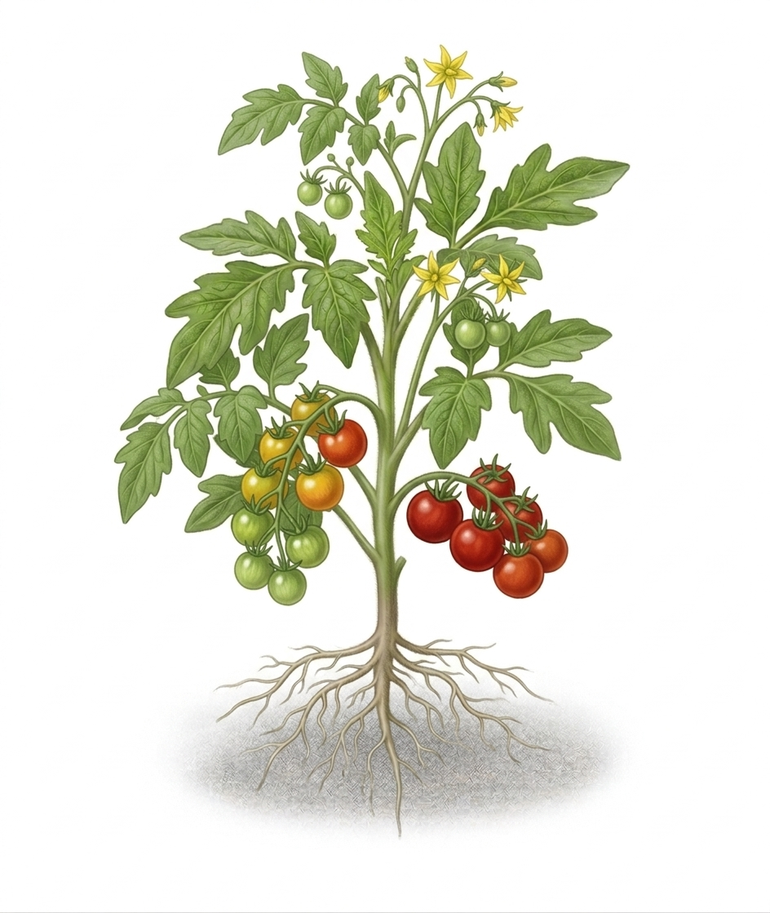

Teaching children in underserved Philadelphia neighborhoods to grow their own food, understand nutrition, and feel empowered to make healthy choices — for life.

Philadelphia is one of the most food-insecure cities in America — and children are bearing the heaviest burden. Food deserts don't just mean empty plates. They mean a lifetime of preventable health consequences.
Children raised in food deserts face dramatically higher rates of obesity, type 2 diabetes, and cardiovascular disease. When kids are never exposed to nutritious food or taught how to make healthy choices, they can face a lifetime of health challenges that could have been prevented. Good2Grow was built to close that gap — with seeds, knowledge, and community.
of Philadelphia children experience food insecurity (Axios, 2023)
children in Philadelphia impacted by hunger
of food stores in Philly sell mostly unhealthy options
ratio of unhealthy to fresh food stores in low-income areas
Spinach, beans, and vegetables are packed with nutrients that help growing bodies build strength and endurance.
Tomatoes, berries, and leafy greens support cognitive function — helping kids focus, learn, and retain information in school.
Whole fruits and vegetables provide clean, sustained energy — no crash, no fog — so kids can stay active all day.
The vitamins and antioxidants in colorful produce strengthen the immune system, keeping kids healthier year-round.
Nutritious food supports emotional wellbeing, helping children feel calmer, more confident, and ready to grow.
Good2Grow is a community effort. Whether you want to support a child directly through our garden kit program — or push for systemic change at the policy level — there is a place for you in this mission.
Contact your Pennsylvania state representative or city council member and ask them to support nutrition education funding in Philadelphia schools. Use the template below as a starting point.
Find Your PA Representative →Reach out to your federal representative about expanding the USDA's farm-to-school and nutrition education programs. These are federally funded and can reach millions of kids.
Find Your U.S. Representative →Tell a teacher, a parent, a neighbor, or your school principal about Good2Grow. Word of mouth is powerful. Every person who hears this story is another potential advocate.
Growing something — anything — is an act of advocacy. It proves that fresh food can come from anywhere: a windowsill, a fire escape, a community plot. Learn how to start.
Dear [Representative's Name],
My name is [Your Name], and I am a resident of [Your City/District]. I am writing to urge you to support legislation that integrates nutrition and food education into standard K–12 school curriculum in Pennsylvania.
Food insecurity affects over 103,000 children in Philadelphia alone. Research shows that children who learn about nutrition, food origins, and basic cooking skills are more likely to make healthier choices and experience better long-term health outcomes. Countries like Japan and the United Kingdom have already made food education a mandatory part of their national curriculum — with proven results.
I am asking you to champion programs like farm-to-school initiatives, school garden funding, and nutrition literacy education. These investments do not just feed children — they empower them. I would welcome the opportunity to speak with you or your staff further about this issue.
Thank you for your time and your service to our community.
Sincerely,
[Your Name]
[Your Address]
[Your Email]
Feel free to personalize this letter with your own story and send it by email, post, or through your representative's official website contact form.
No backyard. No garden. No problem. All you need is a sunny window, a small pot, and a little patience. Follow these seven steps and you'll be harvesting your own tomatoes in North Philly.
A pot at least 6 inches deep, potting soil, cherry tomato seeds, and a south-facing sunny window — that's all you need to start.
Fill almost to the top, leaving about an inch of space. Press the soil down gently so it's compact and ready.
Make a small hole ½ inch deep. Drop in 2–3 seeds, cover gently with soil, and give the top a soft pat.
Water until the soil feels damp — not soaking wet. Think of it as giving your seeds a drink, not a bath. Repeat every 2–3 days.
Set your pot on a sunny windowsill. South-facing windows get the most light in Philly. Your seeds need 6+ hours of sun a day.
In 5–10 days you'll see tiny green sprouts emerging. Keep watering consistently and give your plant a little encouragement!
In 60–80 days your cherry tomatoes will turn bright red. When they feel slightly soft and come off the vine easily — they're ready. Rinse and enjoy.
Something looking off? Almost every windowsill problem comes down to light, water, or warmth.
{{ f.a }}
Every vegetable you grow can become something delicious. These recipes were created for the Good2Grow program — simple, fresh, and made with ingredients you can grow right on your windowsill.
Food insecurity is real, but so is the network of support around you. These organizations serve families across Philadelphia — from emergency food assistance to community gardens to free school meals.
One of Philadelphia's largest food banks. Offers emergency food assistance, fresh produce distribution, and community programs for families in need across the region.
Philadelphia has over 300 community gardens. Many are free to join and welcome beginners and children — a natural next step after your first windowsill tomato.
Free and reduced-price breakfast and lunch are available at all Philadelphia public schools for qualifying students. No child should go to school hungry.
Provides nutritious food packages for families throughout Philadelphia, with multiple distribution sites across North Philly and other underserved neighborhoods.
Seedlings started at home, beds planted with kids, and the first tomatoes coming off the vine.
Good2Grow is more than garden kits — it's a blueprint. My long-term vision is to see nutrition and cooking education woven into the fabric of every American school, the same way reading and math are.
While improving the food system through regulation matters, the most durable change comes from the inside out — from children who grow up understanding food, valuing their health, and feeling empowered to nourish themselves and their communities. We need to address the root cause, not just the symptoms.
Japan's "Basic Law of Shokuiku" requires all public schools to provide education on nutrition, food origin, and food culture. School lunches are treated as a "living textbook" — every meal is a lesson. The result is one of the healthiest nations on earth.
In the UK, cooking and nutrition classes are mandatory for all students ages 5–14 under the national curriculum. Children graduate not just with academic knowledge — but with practical life skills that directly impact their health.
Nearly 70% of an American child's diet is ultra-processed. In most comparable countries that figure is below 20%. Embedding food literacy into our schools would be one of the highest-impact public health investments we could make as a nation.
I'm a junior in high school, and I've loved gardening for as long as I can remember. Growing up, my mom and I would spend afternoons in the garden together — and those moments taught me that growing your own food is something truly magical. It's patience, care, science, and joy all at once.
When I learned about the scale of food insecurity in Philadelphia — that 31% of children in my own city don't know where their next meal is coming from — I knew I had to do something. Good2Grow is my answer to that.
I believe every kid in North Philly deserves to feel the same wonder I felt watching something grow from a seed. Not as a luxury — but as a right. Knowledge is the most lasting gift I can give, and that's exactly what this project is built on.
I'm bubbly, passionate, and 100% committed to this mission. Let's grow something together, Philly.